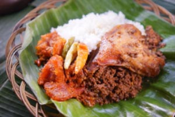
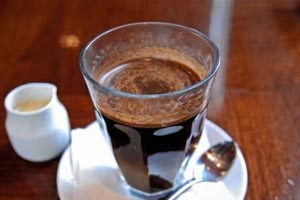
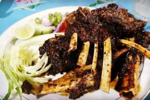

1. GUDEG YU DJUM
Gudegnya tidak berkuah dan rasanya dominan manis. Gudeg Yu Djum ini paling legendaris di Jogja. Cabangnya banyak, tetapi dapur utamanya terletak di Mbarek dan buka dari pk 5 pagi. Kita bisa melihat proses memasaknya yang masih menggunakan kayu bakar.

2. KOPI KLOTOK
Masakan yang disajikan memang bersahaja, seperti sayur lodeh terong, dll. Namun, rasanya sangat lezat dan harganya bersahabat, rata-rata di bawah Rp10.000. Dengan atmosfer pedesaan Jawa, Warung Kopi Klotok dipenuhi wisatawan sejak buka pukul 7 pagi.

3. TENGKLENG GAJAH
Meskipun namanya Tengkleng Gajah, bukan berarti warung tengkleng yang terletak di kawasan Bulurejo ini menggunakan daging gajah sebagai bahan utama menunya. Tengkleng Gajah tak lain adalah tengkleng kambing muda yang disajikan dalam porsi besar, seperti gajah. Rasanya nikmat, dagingnya empuk dan porsinya yang besar membuat warung tengkleng ini ramai dikunjungi, terutama pada jam makan siang dan makan malam. Selain tengkleng, terdapat pula berbagai menu olahan daging kambing lainnya yang sayang bila dilewatkan, seperti tengkleng gajah goreng, sate kambing hingga nasi goreng. Tengkleng Gajah buka dari pukul 9.00 - 21.00.